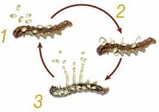

Definición de Hongos Entomopatógenos
Los hongos entomopatógenos son microorganismos que pertenecen al reino Fungi y que actúan como patógenos de insectos. Estos hongos infectan, invaden y se desarrollan dentro del cuerpo de los insectos, utilizando sus recursos para crecer y reproducirse, lo que, en muchos casos, lleva a la muerte del huésped. Existen diversas especies de hongos entomopatógenos, como los del género Beauveria, Metarhizium, Isaria, entre otros, que se encuentran distribuidos en una amplia gama de hábitats naturales, desde suelos hasta la vegetación.
El ciclo de vida de estos hongos comienza cuando las esporas, llamadas conidias, se adhieren a la superficie del insecto. Las conidias germinan en contacto con la cutícula del insecto, liberando enzimas que descomponen las barreras externas del insecto. Posteriormente, el hongo penetra en el interior del insecto a través de la cutícula, y sus hifas se expanden por los tejidos internos, donde el hongo se alimenta de los fluidos corporales del insecto, afectando sus órganos vitales.
A medida que el hongo se desarrolla, el insecto muestra síntomas de debilidad, parálisis y, eventualmente, muerte. Después de la muerte del insecto, el hongo se esporula, produciendo nuevas esporas que pueden liberarse al medio ambiente, en busca de otros insectos que puedan infectar, cerrando el ciclo. Este proceso se repite continuamente, siempre que haya disponibilidad de nuevos huéspedes.
Los hongos entomopatógenos se han utilizado ampliamente en el control biológico de plagas, ya que son una alternativa más ecológica y sostenible a los pesticidas químicos. Su capacidad para regular las poblaciones de insectos dañinos sin afectar a otros organismos no objetivo los convierte en una herramienta valiosa para la agricultura, la silvicultura y el manejo de plagas en entornos naturales.
